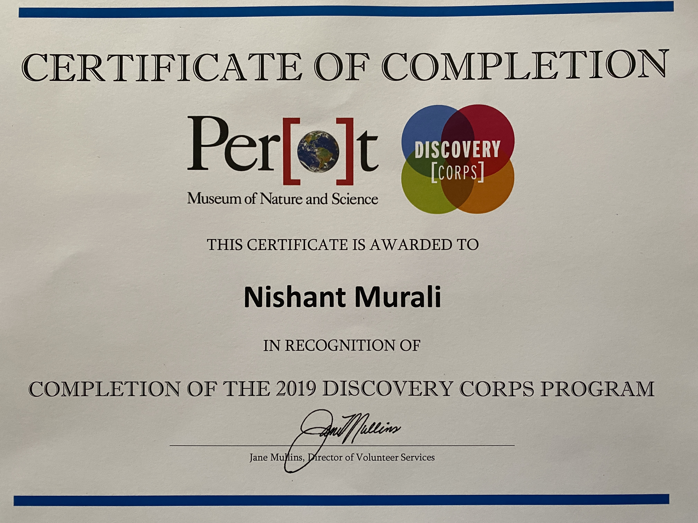
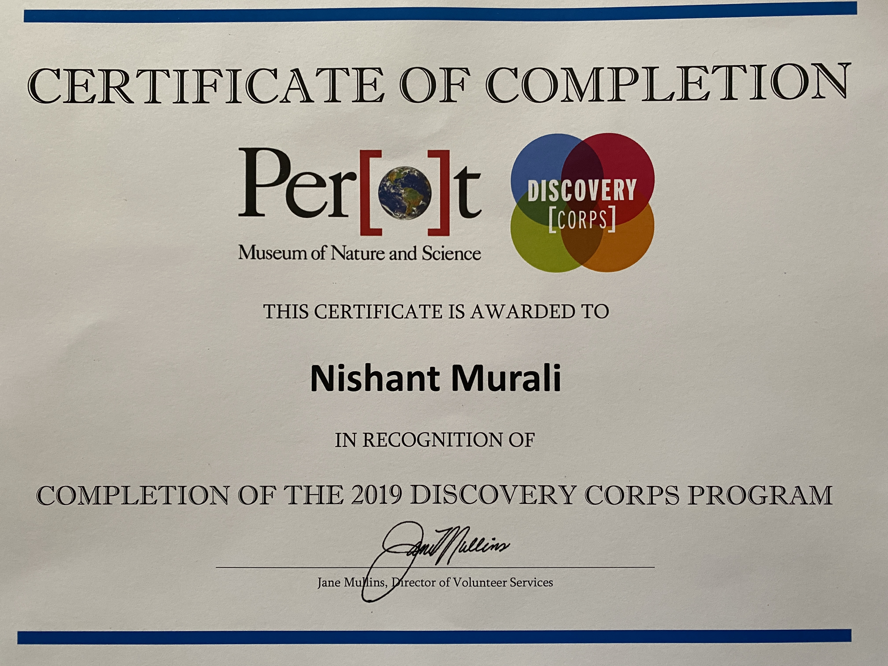

During the start of my junior year, some of my friends and I decided to create a high school club for people interested in Volleyball. My role was the club’s President, where I would recruit members, teach volleyball, and help host occasional tournaments. Club members would meet every friday to practice playing volleyball for upcoming tournaments hosted by our school. We also hosted tournaments of our own where people could freely join to learn, play, and have fun.
`I was a part of Business Professionals of America (BPA) in the junior year of high school. The club had a wide array of events we could specialize from and I chose coding with C# as my individual event and Global marketing as my team event. I won 1st for C# and 2nd for global marketing in regionals and was a BPA state qualifier. Performing in a professional environment such as BPA state taught me the basic etiquettes of a professional. This club taught me how to utilize many qualities like leadership, responsibility, and teamwork.
I was an intern at the Perot Science Museum during my sophomore year. Every year, the Perot hosts an internship called Discovery Corps. Discovery Corp's interns were tasked with helping young school children learn about science and social skills. We were also tasked with creating a science exhibit which would be displayed in the museum during the July 4th celebration. Me and my team worked on a project that displayed the life of a star. We pitched our idea to the owners of the Perot and we won the exhibit to display our project. My leadership and teamwork capabilities were tested and were improved by this internship.

 
